Layouts
Builtin layouts¶
By default, the following layouts are provided:
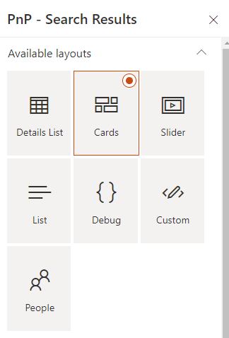
Be careful, when you switch the layout in the property pane, all the previous layout properties are lost. We do this to avoid polluting the Web Part property bag with multiple useless configurations.
Cards¶
The 'cards' layout allows you to display items as tiles, just like the native 'Highlighted Content' SharePoint Web Part.
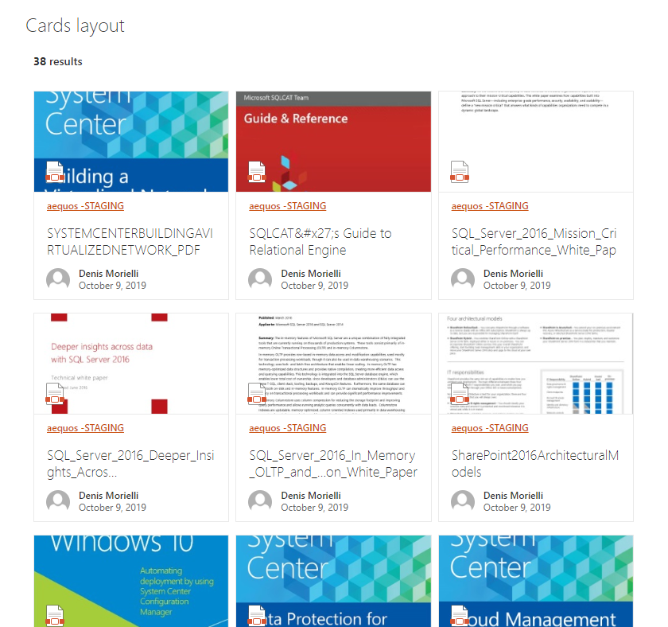
| Setting | Description | Default value |
|---|---|---|
| Manage card fields | Allows you to define you own values for card placeholder fields. By default, the document card fields come with predefined mappings but you can set your own. As a field value, you can choose either a field property value (from the list or as free text) and without any transformation or use an Handlebars expression by clicking on the checkbox next to it. In this case, all helpers from the main template are available. Also, if the field doesn't have the 'Allow HTML' indication flag enabled, it means the value will be always interpreted as text, regardless if you set an HTML value. Otherwise, your value will be interpreted as HTML for those fields (ex: 'Location' and 'Tags' placeholder fields). For HTML fields you can use the special variable @root.theme to use theme colors (ex: @root.theme.palette.themePrimary) or @root.slots.<SlotName> to access slot value. If you don't set a value for those fields (i.e an empty value), they won't appear in the UI:. |
|
| Enable result preview | If enabled, display a callout with an interactive preview of the document based on the value specified value for the PreviewUrl current data source slot. |
False. |
| Show file icon | Hide or display the file icon for the result card. The file icon is determined using the FileType slot. |
True. |
| Compact mode | Display cards as compact. | False. |
| Preferred number of cards per row | Specify the preferred number of cards to display per row when the required width space is available. The Web Part will always adjust the number of possible tiles to display depending the available width. It means that if you set this value to '3' but you display the Web Part in small column, only 1 tile will be displayed. | 3. |
| Enable details | Show a Details action for selected items. Requires Allow items selection to be enabled. When a single compatible item is selected, the action opens a right-side panel with the SharePoint details form for that item. When multiple selection is enabled and more than one compatible SharePoint item is selected, the same Details action opens a selected items edit panel instead. That panel only includes fields that are editable and common across the selected items, and unsupported selections can be excluded automatically. | False. |
| Enable download | Enable download of selected files. Requires Allow items selection to be enabled and supports both single and multiple selection. If single selection is enabled the selected file will be downloaded as is. If multiple selection is enabled the selected files and folders will be downloaded in a single zip file like in SharePoint document libraries. Requires SPWebUrl, ContentTypeId, NormListID and NormUniqueID to be selected in Selected properties. | false |
{kind=link}
{kind=link}
{kind=link}
Details List¶
The 'details list' layout allows you to display items as a structured list, the same way as a SharePoint document library or list.
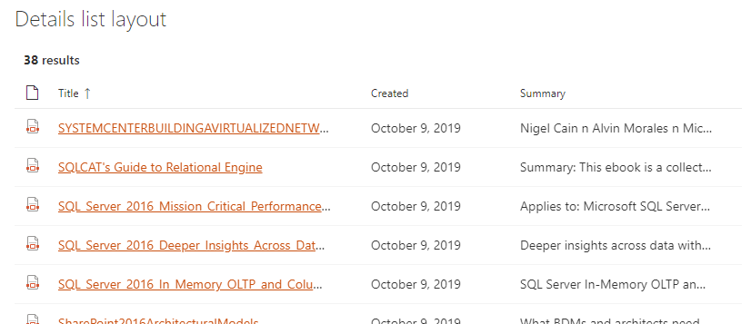
| Setting | Description | Default value |
|---|---|---|
| Manage columns | Allows you to build you own table view by adding or removing columns dynamically. For each column, you get the following options:
|
|
| Show file icon | Hide or display the file icon in the first column. | True. |
| Compact mode | Display the details list in compact mode. | False. |
| Enable details | Show a Details action for selected items. Requires Allow items selection to be enabled. When a single compatible item is selected, the action opens a right-side panel with the SharePoint details form for that item. When multiple selection is enabled and more than one compatible SharePoint item is selected, the same Details action opens a selected items edit panel instead. That panel only includes fields that are editable and common across the selected items, and unsupported selections can be excluded automatically. | False. |
| Enable grouping | Display a grouped list, grouped by the specified column. You may also specify a list of additional columns to group by in a hierarchy of groups. | False. |
| Enable sticky header | Display the details list with a sticky header that will stay in place when scrolling. Specify the desired height for the view (in pixels) and then specify the desired items per page in Number of items per page under Paging options and all items on the page will be scrollable within the view. | False. |
| Enable download | Documents: Enable download of selected files. Requires Allow items selection to be enabled and supports both single and multiple selection. If single selection is enabled the selected file will be downloaded as is. If multiple selection is enabled the selected files and folders will be downloaded in a single zip file like in SharePoint document libraries. Requires SPWebUrl, ContentTypeId, NormListID and NormUniqueID to be selected in Selected properties. ListItems: If the selected items are list items, the values in the columns will be exported to a CSV file, and each column will be seperated by a semi colon If the selection is a mix of documents and list items , or contains other kinds of content, like Sites, then the download button is NOT shown |
False. |
| Use Alternating Background color | Enables the use of alternating background color.The alternating background color is set to themeVariant.semanticColors.bodyBackgroundChecked, and it can not be changed in the web part properties. 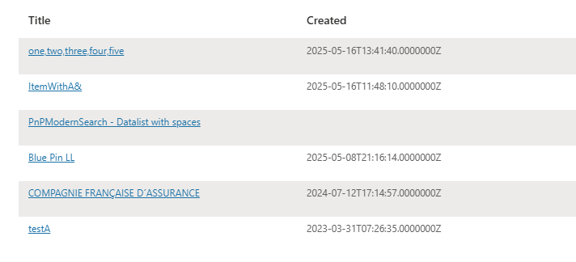 |
False. |
{kind=link}
Slider¶
The 'slider' layout allows you to display data as as dynamic slider (i.e caroussel).
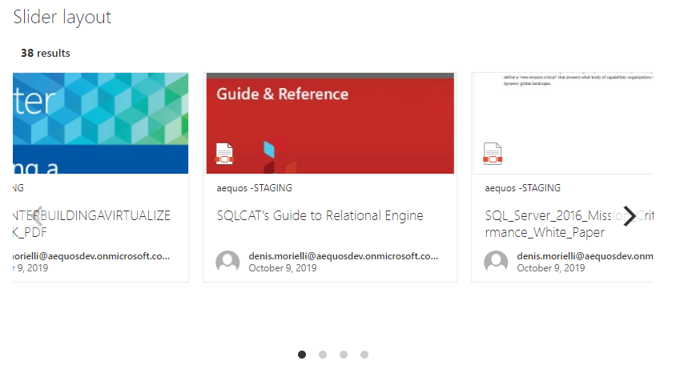
| Setting | Description | Default value |
|---|---|---|
| Auto play | If enabled, slides move automatically every X seconds. | True. |
| Auto play duration | Move elements every X seconds. | 3 seconds. |
| Pause on hover | If enabled, pause the slider on mouse hover. | True. |
| Number of elements to group together in slides | Groups cells together in slides. | 3. |
| Show page dots | Enable or disable slider navigation. | True. |
| Infinite scrolling | Enable or disable infinite scrolling on the carousel. | False. |
| Slide height (in px) | Dynamically set the slides height to adjust your results. | 360px. |
| Slide width (in px) | Dynamically set the slides width to adjust your results. | 318px. |
| Enable details | Show a Details action for selected items. Requires Allow items selection to be enabled. When a single compatible item is selected, the action opens a right-side panel with the SharePoint details form for that item. When multiple selection is enabled and more than one compatible SharePoint item is selected, the same Details action opens a selected items edit panel instead. That panel only includes fields that are editable and common across the selected items, and unsupported selections can be excluded automatically. | False. |
| Enable download | Enable download of selected files. Requires Allow items selection to be enabled and supports both single and multiple selection. If single selection is enabled the selected file will be downloaded as is. If multiple selection is enabled the selected files and folders will be downloaded in a single zip file like in SharePoint document libraries. Requires SPWebUrl, ContentTypeId, NormListID and NormUniqueID to be selected in Selected properties. | False. |
Simple list¶
The 'simple list' layout display items as a simple list with larger rows, like a search engine results display.
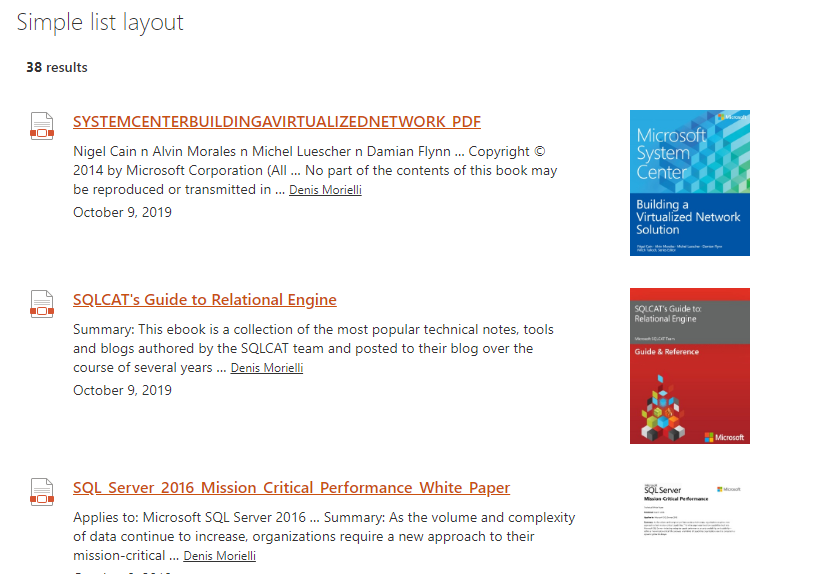
| Setting | Description | Default value |
|---|---|---|
| Show file icon | Hide or display the file icon for the result card. The file icon is determined using the FileType slot. |
True. |
| Show thumbnail | If enabled, display a thumbnail for the itme + a callout with an interactive preview of the document on click based on the value specified value for the PreviewUrl current data source slot. |
False. |
| Enable details | Show a Details action for selected items. Requires Allow items selection to be enabled. When a single compatible item is selected, the action opens a right-side panel with the SharePoint details form for that item. When multiple selection is enabled and more than one compatible SharePoint item is selected, the same Details action opens a selected items edit panel instead. That panel only includes fields that are editable and common across the selected items, and unsupported selections can be excluded automatically. | False. |
| Enable download | Enable download of selected files. Requires Allow items selection to be enabled and supports both single and multiple selection. If single selection is enabled the selected file will be downloaded as is. If multiple selection is enabled the selected files and folders will be downloaded in a single zip file like in SharePoint document libraries. Requires SPWebUrl, ContentTypeId, NormListID and NormUniqueID to be selected in Selected properties. | False. |
{kind=link}
People¶
The 'people' layout displays a list of persons with additional information. Typically, this layout is well suited for a people directory.
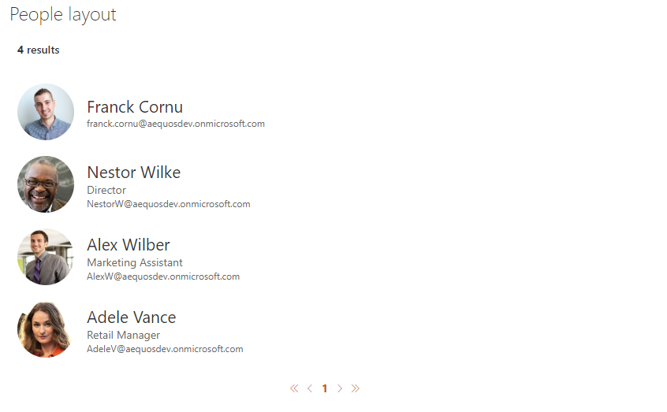
By default, the user profile pictures are fetched from the SharePoint User Profile Service. If your user pictures are stored in Active Directoy, make sure you synchronized them with SharePoint User Profile Service. Otherwise, a placeholder image will be displayed.
| Setting | Description | Default value |
|---|---|---|
| Manage people fields | Allows you to define you own values for people placeholder fields. As a field value, you can choose either a field property value (from the list or as free text) and without any transformation or use an Handlebars expression by clicking on the checkbox next to it. In this case, all helpers from the main template are available. Also, if the field doesn't have the 'Allow HTML' indication flag enabled, it means the value will be always interpreted as text, regardless if you set an HTML value. Otherwise, your value will be interpreted as HTML for those fields (ex: 'Primary text' placeholder field). For HTML fields you can use the special variable @root.theme to use theme colors (ex: @root.theme.palette.themePrimary) or @root.slots.<SlotName> to access slot value. If you don't set a value for those fields (i.e an empty value), they won't appear in the UI.The UPN-field is necessary for displaying the native SharePoint persona card (LPC) on hover. If it contains an empty value, the persona card will not appear. If it contains an invalid value (e.g. a non-existing UPN), an empty persona card will be shown. |
|
| Show persona card on hover (LPC) | If enabled, show a person card on hover for the curren item using the native SharePoint implementation. | |
| Show persona card on hover | If enabled, show a person card on hover for the current item. This feature uses Microsoft Graph and Microsoft Graph Toolkit to display information about the user and needs the following API permissions in your tenant to work:
$m365 spo serviceprincipal grant add --resource '<aad_app_display_name>' --scope 'user_impersonation'. Refer to the section below about persona hover card customization. |
|
| Show presence | If enabled, the person's presence-information will be displayed in the bottom right corner of the user's profile picture. This feature uses Microsoft Graph and needs the API permission 'Presence.Read.All' in your tenant to work. |
|
| Show hover on picture only | If enabled, the person card (LPC) or the persona card will only appear when hovering over the profile picture, not the entire item. This provides a more focused hover experience and is useful for compact layouts. | |
| Component size | The size of the person item (not only the picture). The more the size is and the more information will be displayed for each item and vice versa. |
{kind=link}
{kind=link}
Persona hover card¶
Activating this option may slightly reduce loading performances because the user information are fecthed individually for each user (i.e result). This option shouldn't be used with large page count.
Microsoft Graph Toolkit¶
The hover card uses Microsoft Graph Toolkit. This means you can add additional information providing your own template like this:
<mgt-person-card inherit-details>
<template data-type="additional-details">
<h3>Stuffed Animal Friends:</h3>
<ul>
<li>Giraffe</li>
<li>lion</li>
<li>Rabbit</li>
</ul>
</template>
</mgt-person-card>
Debug¶
The 'debug' layout allows you to see all relevant data used by layout templates or data sources during render.
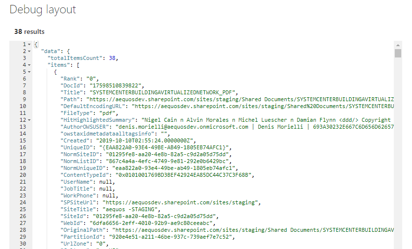
The template context object exposes the following properties:
"paging": {
"currentPageNumber": "<The current selected page number>"
},
"filters": {
"selectedFilters": "<List of currently selected filters>",
"filterOperator": "<Operator to use between filters>",
"instanceId": "<The connected Filters Web Part instance ID>",
"filtersConfiguration": "<The filters configuration>"
},
"inputQueryText": "<The current input query text (Ex: search box text)>",
"slots": "<Hashtable of configured slots for the current data source. Usage: {{slot item @root.slots}} >",
"theme": "<Current theme variables>",
"properties": "<Web Part properties from property bag>",
"context": {
"site": "<Contextual information for the SharePoint site collection that is hosting the page>",
"web": "<Contextual information for the SharePoint web that is hosting the page>",
"list" :"<Contextual information for the SharePoint list that is hosting the page>",
"listItem":"<Contextual information for the SharePoint list item that is hosting the page>",
"cultureInfo":"<It provides culture info for the current user of the application>",
"user":"<It provides contextual information for the SharePoint user that is accessing the page>"
},
"data": "<The data source data>",
"instanceId": "<The Web Part instance ID>",
"utils": {
"defaultImage": "<The default image content to display when no thummbnail is available (Base64)>"
}
Custom¶
The 'Custom' layout is a minimal layout to start with if you want to create your own customized UI from scratch.
You can also start from an existing layout by first selecting it, and then click {} next to the Edit results template field. This will copy the selected template and allow you to make modifications as needed.
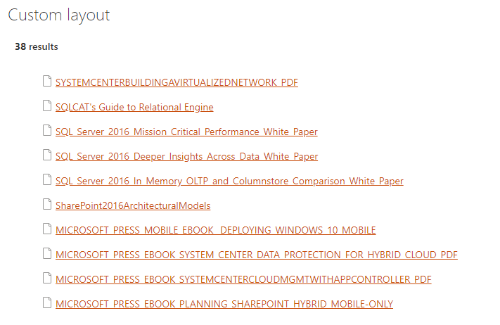
Updating a builtin layout (ex: 'Cards', 'Detail List', etc.) will automatically switch the selected layout to 'Custom' with your modifications as content. All previous custom layout content will be overwritten.
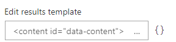
You have also the ability to use an external .html file to centralize your customizations. This file must be stored in an accessible location for uses (ex: a SharePoint document library with 'Read' permissions for concerned users).
Template HTML is sanitized to prevent XSS attacks. Some elements (e.g.
<script>,<form>,<iframe>) and dangerous attributes are blocked. See Template sanitization for the full list of blocked elements and attributes.
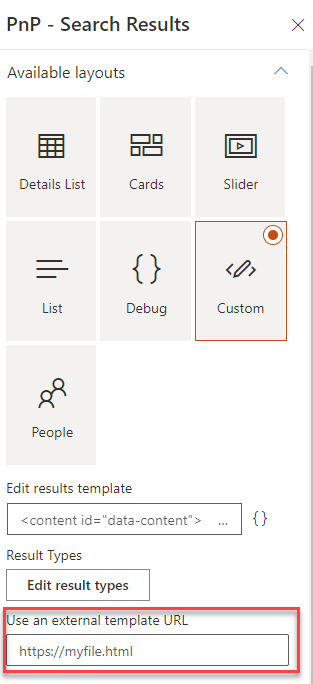
Unless you specify an external file, the template content is stored in the Web Part property bag.
Updating the layout HTML template is a good option for minor UI updates (Ex: add a link, update colors, etc.). For more control over the UI, you may want to use the extensibility library feature.
Common settings¶
For all layouts, some common settings are available:
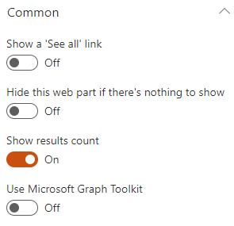
| Setting | Description | Default value |
|---|---|---|
| Allow items selection | If enabled, allow items to be selected in default layouts. See documentation for usage. | Disabled. |
| Allow multiple selection | If the item selection is allowed, specify if users can select multiple items. When a layout also has Enable details turned on, the same Details action is reused for both modes: single selection opens the SharePoint details panel for that item, while multiple selection opens the shared selected items edit panel for the compatible selected items. | Disabled. |
| Preserve selection on empty click | If the item selection is allowed, specify if a click outside of the selection zone should clear the selection | Disabled. |
| Hide this web part if there's nothing to show | If there is no results, the Web Part will remain blank in display mode (title and 'See all' link included). In edit mode, you will see a message indicating there is no results. 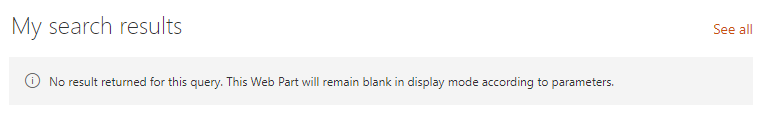 |
Disabled. |
| Show results count | Hide or display the results count for the current query. | Enabled. |
| Use Microsoft Graph Toolkit | Enable or disable the Microsoft Graph Toolkit to be used in Handlebars template. Refer to the MGT documentation to see available components. |
Result types¶
The result types feature gives you the ability to apply a conditional rendering at item level according to data source field values.
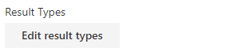
Not all layouts support the result types feature (ex: Details lsit and slider layouts).
Example
Given the following conditions, we apply a border with a specific color for each:
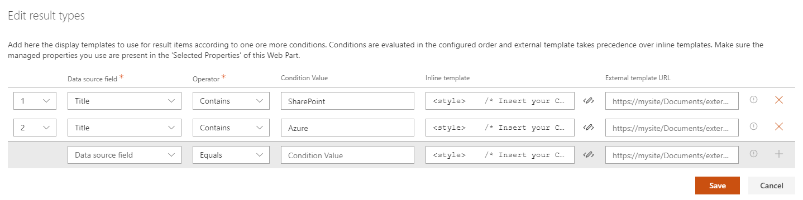
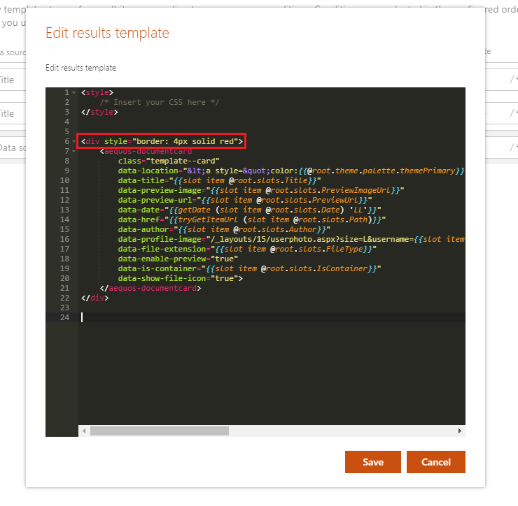
The result would be like this:
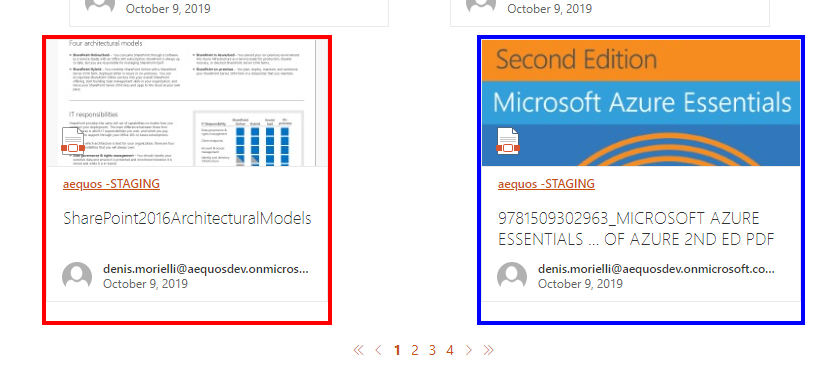
The following operators are supported:
- Equals
- Not equals
- Contains
- StartsWith
- Greater Or Equal
- Less Or Equal
- Less than
- Greater than
- Is not null
In case you use a custom template, you can still benefit from this feature following this markup:
{{#> resultTypes}}
{{!-- The block below will be used as default item template if no result types matched --}}
<div class="template_result">
<!-- Your default template markup -->
</div>
{{/resultTypes}}
Handlebars partials are used behind the scenes and conditions are built dynamically using a recursive if/else structure.